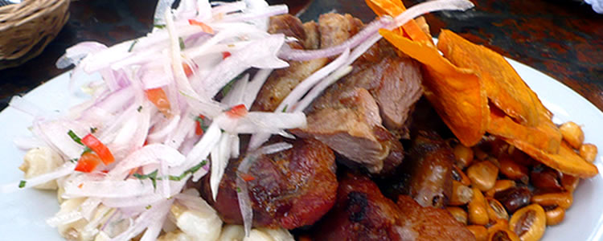
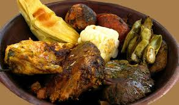
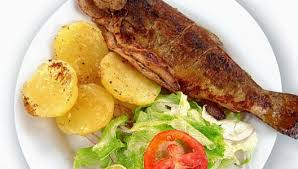

Principales de Platos Típicos:
Picante de Cuy (haka pichu):.jpg)
Cuy frito, servido con papas y ají.
Llunca Cashki:
Sopa de trigo resbalado (descascarado) con carne (gallina, cordero, res), verduras.
Pecan Caldo:
Sopa con cabeza de cordero. Se hace hervir la cabeza con el mondongo y paptitas. Se sirve con hierba buena picada.
Shakwi:
Sopa de harina (arvejas, habas o trigo), huevo y queso. 
Puchero:
Potaje a base de col o repollo, con carne de res, ovino o chancho. Se sirve con hierba buena o orégano.
Cuchi Canca:
Asado de chancho servido con ensalada, papas doradas y lechuga.
Huallpa Caldo:
Carne de gallina hervida en sal, una vez sancochado se le agrega papas crudas peladas. A parte se hace un adrezo de manteca, ajos y ají mirasol molido, y se agrega al caldo junto con las presas y las papas.
Pachamanca:
Pacha = tierra, Manca = olla. Horno hecha en tierra, hasta obtener una cama de piedras calientes. Se pone las papas, habas, carne macerado con chinchu, perejil y culantro molido. Tapado con hojas, encima piedras calientes, cocinado 1 hora aproximadamente.
Trucha Frita: 
Trucha frita servida acompañado de ensalada y lechuga, se puede servir también con papas hervidad en rodajas o arroz.
Tamales:
Maiz molido con relleno de carne envuelto con hojas y cocidos a vapor.
Humita:
Choclo molido con azúcar, envuelto eb hojas y cocido al vapor.
Ceviche de chocho: 
Un tipo de leguminosa preparada como ceviche, se prepara con tomates picados, rocoto, culantro, pimienta comino, sal, jugo de limón. Se puede acompañar con choclos, lechuga.
Chicharrón:
Carne de chancho hervida en su propia grasa. El plato va acompañado con mote de maiz, ensalada y hojas de hierba buena.
Charqui: 
Carne cortada en tiras y secadas al sol.
Api (Dulce) de Calabaza:
Calabaza descascarada, luego cortado en trozos, hervido con canela, clavo de olor, cáscara de naranja. Para darle sabor se le agrega chancaca o azúcar quemado.
Bebidas Típicas
Chicha de Jora: Bebida prepada a base de maíz fermentad. Hervido y luego guardado en cántaros ("Kuntus"), curado con chancaca y azúcar.